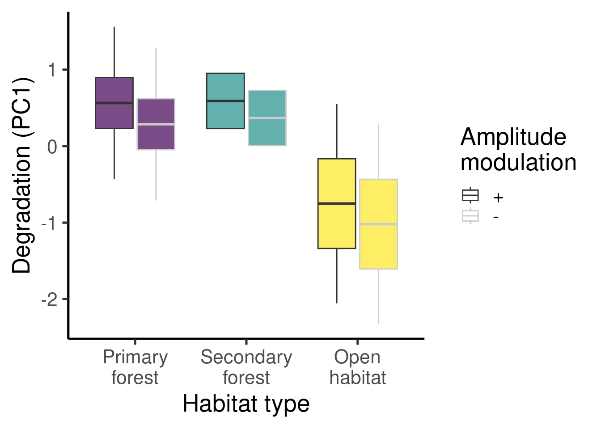

flowchart A[Time sync files] --> B(Measure degradation) B --> C(Regression models) C --> D(Model selection) style A fill:#44015466 style B fill:#3E4A894D style C fill:#26828E4D style D fill:#6DCD594D
Acoustic and statistical analysis
Winner takes all acoustic adapation
Source code and data found at https://github.com/maRce10/winner_takes_all_hypothesis
Purpose
Measure degradation on re-recorded files
Run stats
Analysis flowchart
Load packages
Code
# knitr is require for creating html/pdf/word reports formatR is
# used for soft-wrapping code
# install/ load packages
sketchy::load_packages(packages = c("knitr", "formatR", "baRulho",
"viridis", "warbleR", "Rraven", "brms", "ggplot2", "corrplot",
"emmeans", "ggsignif", "lme4"))1 Time sync all replicates
Code
metadata <- read.csv("./data/raw/metadata_playback_experiments.csv")
master.sf <- read.csv("./data/processed/master_annotations.csv")
# remove bird songs
master.sf <- master.sf[c(1:(grep("Haemorhous", master.sf$orig.sound.file)[1] -
1), nrow(master.sf)), ]
# rename sound file
master.sf$sound.files <- "consolidated_master_only_synthetic.wav"
master.sf$sound.id <- paste(master.sf$orig.sound.file, seq_len(nrow(master.sf)),
sep = "-")
master.sf$sound.id[1] <- "start_marker"
master.sf$sound.id[nrow(master.sf)] <- "end_marker"
master.sf$start[master.sf$sound.id == "end_marker"] <- 194.074
master.sf$end[master.sf$sound.id == "end_marker"] <- 194.931
exp_raven(master.sf, path = "./data/raw", file.name = "master_annotations",
sound.file.path = "./data/raw/recordings")
found.starts <- baRulho::find_markers(X = master.sf, markers = c("start_marker",
"end_marker"), path = "./data/raw/recordings", cores = 3)
warbleR::info_sound_files("./data/raw/recordings")
alg.tests <- align_test_files(X = master.sf, Y = found.starts, path = "./data/raw/recordings",
by.song = FALSE)
alg.tests <- alg.tests[!(alg.tests$sound.files %in% "ZOOM0012_Tr2.WAV" &
alg.tests$selec %in% 1:18), ]
alg.tests$row <- 1:nrow(alg.tests)
alg.tests <- alg.tests[!alg.tests$row %in% 13469:13486, ]
exp_raven(alg.tests, path = "./data/processed", file.name = "check_alignment",
sound.file.path = "./data/raw/recordings", single.file = TRUE)
getOption("baRulho")$files_to_check_align_test_files
cs <- check_sels(alg.tests, path = "./data/raw/recordings")
table(alg.tests$sound.files)
alg.tests <- manual_realign(X = alg.tests, Y = master.sf, path = "./data/raw/recordings",
flim = c(0, 6), marker = "end_marker")
# add metadata
metadata$transect.id <- paste(metadata$habitat.type, metadata$transect..,
sep = "-")
alg.tests$transect <- sapply(alg.tests$sound.files, function(x) metadata$transect.id[metadata$sound.file.name ==
x][1])
alg.tests$distance <- sapply(alg.tests$sound.files, function(x) metadata$distance.from.signal..m.[metadata$sound.file.name ==
x][1])
alg.tests$habitat.type <- sapply(alg.tests$sound.files, function(x) metadata$habitat.type[metadata$sound.file.name ==
x][1])
# remove markers
alg.tests <- alg.tests[grep("marker", alg.tests$sound.id, invert = TRUE),
]
alg.tests.est <- selection_table(alg.tests, extended = TRUE, path = "./data/raw/recordings")
saveRDS(alg.tests.est, "./data/raw/extended_selection_table_rerecorded_sounds.RDS")2 Measure degradation
2.1 Using 1 m reference
Code
alg.tests.est <- readRDS("../data/processed/extended_selection_table_rerecorded_sounds.RDS")
table(alg.tests.est$sound.id)
table(alg.tests.est$distance)
# remove 3 m distance
alg.tests.est <- alg.tests.est[alg.tests.est$distance != 3, ]
# keep only not harm
alg.tests.est <- alg.tests.est[grep("no.harm", alg.tests.est$sound.id),
]
alg.tests.est
cores <- 3
alg.tests.est <- resample_est(alg.tests.est, samp.rate = 22.05, parallel = cores)
saveRDS(alg.tests.est, "./data/raw/extended_selection_table_subset_resampled_rerecorded_sounds.RDS")Code
alg.tests.est <- readRDS("./data/processed/extended_selection_table_subset_resampled_rerecorded_sounds.RDS")
alg.tests.est <- set_reference_sounds(alg.tests.est)
# run blur ratio
alg.tests.est <- blur_ratio(alg.tests.est, cores = cores)
# run Spectrum blur ratio
alg.tests.est <- spectrum_blur_ratio(alg.tests.est, cores = cores)
# run envelope correlation
alg.tests.est <- excess_attenuation(alg.tests.est, cores = cores)
# run envelope correlation
alg.tests.est <- envelope_correlation(alg.tests.est, cores = cores)
# run spectrum correlation
alg.tests.est <- spectrum_correlation(alg.tests.est, cores = cores)
# run signal to noise ratio
alg.tests.est <- signal_to_noise_ratio(alg.tests.est, cores = cores,
mar = 0.03)
# run tail to noise ratio
alg.tests.est <- tail_to_signal_ratio(alg.tests.est, cores = cores,
tsr.formula = 2, mar = 0.03)
names(alg.tests.est)[ncol(alg.tests.est)] <- "tail.to.noise.ratio"
# run tail to signal ratio
alg.tests.est <- tail_to_signal_ratio(alg.tests.est, cores = cores,
tsr.formula = 1, mar = 0.03)
# run spcc
source("~/Dropbox/R_package_testing/baRulho/R/spcc.R")
source("~/Dropbox/R_package_testing/warbleR/R/cross_correlation.R")
source("~/Dropbox/R_package_testing/warbleR/R/internal_functions.R")
alg.tests.est <- spcc(X = alg.tests.est, cores = cores)
af <- spectro_analysis(alg.tests.est, parallel = cores)
alg.tests.est$peak.frequency <- af$meanpeakf
alg.tests <- as.data.frame(alg.tests.est)
alg.tests <- alg.tests[alg.tests$distance > 3, ]
write.csv(alg.tests, "./data/processed/degradation_metrics.csv", row.names = FALSE)2.2 Using 3 m reference
Code
alg.tests.est <- readRDS("./data/raw/extended_selection_table_rerecorded_sounds.RDS")
table(alg.tests.est$sound.id)
table(alg.tests.est$distance)
# remove 3 m distance
alg.tests.est <- alg.tests.est[alg.tests.est$distance != 1, ]
# keep only not harm
alg.tests.est <- alg.tests.est[grep("no.harm", alg.tests.est$sound.id),
]
alg.tests.est
cores <- 3
alg.tests.est <- resample_est(alg.tests.est, samp.rate = 22.05, parallel = cores)
saveRDS(alg.tests.est, "./data/raw/extended_selection_table_subset_resampled_rerecorded_sounds_3m_reference.RDS")Code
alg.tests.est <- readRDS("./data/raw/extended_selection_table_subset_resampled_rerecorded_sounds_3m_reference.RDS")
alg.tests.est <- set_reference_sounds(alg.tests.est)
# run blur ratio
alg.tests.est <- blur_ratio(alg.tests.est, cores = cores)
# run Spectrum blur ratio
alg.tests.est <- spectrum_blur_ratio(alg.tests.est, cores = cores)
# run envelope correlation
alg.tests.est <- excess_attenuation(alg.tests.est, cores = cores)
# run envelope correlation
alg.tests.est <- envelope_correlation(alg.tests.est, cores = cores)
# run spectrum correlation
alg.tests.est <- spectrum_correlation(alg.tests.est, cores = cores)
# run signal to noise ratio
alg.tests.est <- signal_to_noise_ratio(alg.tests.est, cores = cores,
mar = 0.03)
# run tail to noise ratio
alg.tests.est <- tail_to_signal_ratio(alg.tests.est, cores = cores,
tsr.formula = 2, mar = 0.03)
names(alg.tests.est)[ncol(alg.tests.est)] <- "tail.to.noise.ratio"
# run tail to signal ratio
alg.tests.est <- tail_to_signal_ratio(alg.tests.est, cores = cores,
tsr.formula = 1, mar = 0.03)
# run spcc
source("~/Dropbox/R_package_testing/baRulho/R/spcc.R")
source("~/Dropbox/R_package_testing/warbleR/R/cross_correlation.R")
source("~/Dropbox/R_package_testing/warbleR/R/internal_functions.R")
alg.tests.est <- spcc(X = alg.tests.est, cores = cores)
af <- spectro_analysis(alg.tests.est, parallel = cores)
alg.tests.est$peak.frequency <- af$meanpeakf
alg.tests <- as.data.frame(alg.tests.est)
alg.tests <- alg.tests[alg.tests$distance > 3, ]
write.csv(alg.tests, "./data/processed/degradation_metrics_3m_reference.csv",
row.names = FALSE)3 Stats
3.1 3 m reference
Code
degrad_dat <- read.csv("./data/processed/degradation_metrics_3m_reference.csv")
degrad_measures <- c("blur.ratio", "spectrum.blur.ratio", "excess.attenuation",
"envelope.correlation", "spectrum.correlation", "signal.to.noise.ratio",
"tail.to.noise.ratio", "tail.to.signal.ratio", "cross.correlation")
pca <- prcomp(degrad_dat[, degrad_measures], scale = TRUE)
pcaStandard deviations (1, .., p=9):
[1] 1.90254087 1.23406748 1.05767232 0.96094375 0.81099019 0.77943774 0.65255706
[8] 0.35182717 0.02215169
Rotation (n x k) = (9 x 9):
PC1 PC2 PC3 PC4 PC5
blur.ratio -0.38584352 0.4454554 0.1408459 0.07278180 -0.15297841
spectrum.blur.ratio -0.26149531 -0.1171658 -0.5124751 0.29086176 -0.54901906
excess.attenuation 0.05008437 -0.1443058 0.5829738 0.78625810 -0.04791866
envelope.correlation 0.40765310 -0.4020505 -0.0043749 -0.01956126 0.16817677
spectrum.correlation 0.24302112 0.2529869 0.4591970 -0.41022995 -0.24998952
signal.to.noise.ratio 0.42603788 0.4123951 -0.1657305 0.17942614 -0.12046982
tail.to.noise.ratio 0.24794848 0.5396357 -0.2859322 0.29228796 0.43123030
tail.to.signal.ratio -0.41172943 -0.1002677 -0.0307314 0.01079424 0.61725322
cross.correlation 0.37747633 -0.2646517 -0.2379579 0.07407219 -0.02504419
PC6 PC7 PC8 PC9
blur.ratio -0.21953606 -0.246507788 0.703700901 0.0000399136
spectrum.blur.ratio 0.51326657 0.046448169 0.060322037 0.0006602391
excess.attenuation 0.09101454 -0.045505686 -0.077156802 0.0018217444
envelope.correlation 0.18907061 0.347081726 0.698051334 -0.0002179129
spectrum.correlation 0.62525759 -0.210376231 -0.009351723 0.0006262140
signal.to.noise.ratio -0.09582457 0.137918139 -0.020653657 0.7386598209
tail.to.noise.ratio 0.26046319 0.001696522 -0.003024023 -0.4757234210
tail.to.signal.ratio 0.40585439 -0.211454158 0.029453354 0.4775611497
cross.correlation -0.10789694 -0.840562118 0.080912202 -0.0002191684Code
summary(pca)Importance of components:
PC1 PC2 PC3 PC4 PC5 PC6 PC7
Standard deviation 1.9025 1.2341 1.0577 0.9609 0.81099 0.7794 0.65256
Proportion of Variance 0.4022 0.1692 0.1243 0.1026 0.07308 0.0675 0.04731
Cumulative Proportion 0.4022 0.5714 0.6957 0.7983 0.87137 0.9389 0.98619
PC8 PC9
Standard deviation 0.35183 0.02215
Proportion of Variance 0.01375 0.00005
Cumulative Proportion 0.99995 1.00000Code
degrad_dat$degrad.pc1 <- pca$x[, 1] * -1
degrad_dat$frequency.modulation <- ifelse(grepl("BB", degrad_dat$sound.id),
"fm", "no.fm")
degrad_dat$amplitude.modulation <- ifelse(grepl("_am", degrad_dat$sound.id),
"am", "no.am")
degrad_dat$duration <- ifelse(grepl("0.1", degrad_dat$sound.id), "short",
"long")
degrad_dat$frequency <- degrad_dat$peak.frequency
degrad_dat$peak.frequency <- NULL
sim_candidates <- seq(0.5, 10, by = 0.5)
degrad_dat$sim.frequency <- sapply(degrad_dat$frequency, function(x) sim_candidates[which.min(abs(sim_candidates -
x))])
degrad_dat$sound.treatment <- sapply(strsplit(degrad_dat$sound.id,
".wav"), "[[", 1)
degrad_dat$distance_f <- factor(as.character(degrad_dat$distance),
levels = c("10", "30"), ordered = TRUE)
# iter <- 5000 chains <- 4 priors <- c(prior(normal(0, 6), class
# = 'b')) set.seed(123) mod <- brm(degrad.pc1 ~ frequency *
# habitat.type + duration * habitat.type + frequency.modulation
# * habitat.type + amplitude.modulation * habitat.type + (1 |
# transect) + mo(distance_f), data = degrad_dat, prior = priors,
# iter = iter, chains = chains, cores = chains, control =
# list(adapt_delta = 0.99, max_treedepth = 15), file =
# './data/processed/global_regression_model_int_all_data.RDS',
# file_refit = 'always' )
int_mod <- lmer(degrad.pc1 ~ frequency * habitat.type + duration *
habitat.type + frequency.modulation * habitat.type + amplitude.modulation *
habitat.type + (1 | transect/sound.treatment) + (1 | distance_f),
data = degrad_dat)
int2_mod <- lmer(degrad.pc1 ~ frequency * habitat.type + duration *
habitat.type + frequency.modulation * habitat.type + amplitude.modulation *
habitat.type + distance_f + (1 | transect/sound.treatment), data = degrad_dat)
no_int_mod <- lmer(degrad.pc1 ~ frequency + duration + frequency.modulation +
amplitude.modulation + (1 | transect/sound.treatment) + (1 | distance_f),
data = degrad_dat)
no_int2_mod <- lmer(degrad.pc1 ~ frequency + duration + frequency.modulation +
amplitude.modulation + distance_f + (1 | transect/sound.treatment),
data = degrad_dat)
null_mod <- lmer(degrad.pc1 ~ 1 + (1 | transect/sound.treatment) +
(1 | distance_f), data = degrad_dat)
aic_tab_3m <- AIC(int_mod, int2_mod, no_int_mod, no_int2_mod, null_mod)
aic_tab_3m$delta_aic <- aic_tab_3m$AIC - min(aic_tab_3m$AIC)
aic_tab_3m <- aic_tab_3m[order(aic_tab_3m$delta_aic), ]
aic_tab_3m| df | AIC | delta_aic | |
|---|---|---|---|
| int2_mod | 19 | 28855.92 | 0.000000 |
| int_mod | 19 | 28859.54 | 3.618538 |
| no_int2_mod | 9 | 29294.23 | 438.313225 |
| no_int_mod | 9 | 29297.85 | 441.931358 |
| null_mod | 5 | 29367.40 | 511.481858 |
3.2 1 m reference
Code
degrad_dat <- read.csv("./data/processed/degradation_metrics.csv")
degrad_measures <- c("blur.ratio", "spectrum.blur.ratio", "excess.attenuation",
"envelope.correlation", "spectrum.correlation", "signal.to.noise.ratio",
"tail.to.noise.ratio", "tail.to.signal.ratio", "cross.correlation")3.2.1 Descriptive stats
Total test sounds: 8606
Code
agg <- aggregate(selec ~ habitat.type + distance, degrad_dat, length)
agg$bytran <- round(agg$selec/3, 0)
names(agg) <- c("habitat type", "distance", "total test sounds", "sounds per transect")
agg| habitat type | distance | total test sounds | sounds per transect |
|---|---|---|---|
| open garden | 10 | 1423 | 474 |
| primary | 10 | 1440 | 480 |
| secondary | 10 | 1440 | 480 |
| open garden | 30 | 1423 | 474 |
| primary | 30 | 1440 | 480 |
| secondary | 30 | 1440 | 480 |
3.2.2 PCA
Code
pca <- prcomp(degrad_dat[, degrad_measures], scale = TRUE)
pcaStandard deviations (1, .., p=9):
[1] 1.87106419 1.28111213 1.03849658 0.97642327 0.81453877 0.78553515 0.64309840
[8] 0.36247468 0.02215037
Rotation (n x k) = (9 x 9):
PC1 PC2 PC3 PC4
blur.ratio -0.38687277 0.4253466 -0.01727961 0.21079248
spectrum.blur.ratio -0.22439458 -0.2229048 0.61540649 0.04112823
excess.attenuation 0.06067722 -0.2494158 -0.16337169 0.94447354
envelope.correlation 0.41853010 -0.3671890 -0.06155544 -0.07294015
spectrum.correlation 0.24114246 0.2694327 -0.52449798 -0.09284097
signal.to.noise.ratio 0.43149099 0.3861170 0.24836751 0.12727115
tail.to.noise.ratio 0.24511723 0.4979228 0.42536797 0.15910046
tail.to.signal.ratio -0.42292300 -0.1009215 0.04000932 -0.04195785
cross.correlation 0.37127736 -0.3042451 0.26678396 -0.06807099
PC5 PC6 PC7 PC8
blur.ratio -0.11045918 -0.25450581 -0.24089938 -0.6997642631
spectrum.blur.ratio -0.66865558 0.17157338 0.20327040 -0.0410687209
excess.attenuation -0.02184109 0.08222851 -0.02685763 0.0861785996
envelope.correlation 0.12757045 0.18084213 0.38721872 -0.6942470095
spectrum.correlation -0.58425413 0.46994837 -0.15237219 -0.0108002795
signal.to.noise.ratio -0.03857702 -0.14756291 0.12601133 0.0456180038
tail.to.noise.ratio 0.26780290 0.43302209 0.01381100 -0.0005273182
tail.to.signal.ratio 0.32858613 0.65869315 -0.18123365 -0.0696225651
cross.correlation -0.03766865 -0.04809244 -0.82332038 -0.1104194143
PC9
blur.ratio 0.0008441413
spectrum.blur.ratio 0.0008019984
excess.attenuation 0.0016765357
envelope.correlation 0.0003257433
spectrum.correlation 0.0006800811
signal.to.noise.ratio 0.7386622573
tail.to.noise.ratio -0.4757331210
tail.to.signal.ratio 0.4775471883
cross.correlation -0.0001226832Code
summary(pca)Importance of components:
PC1 PC2 PC3 PC4 PC5 PC6 PC7
Standard deviation 1.871 1.2811 1.0385 0.9764 0.81454 0.78554 0.64310
Proportion of Variance 0.389 0.1824 0.1198 0.1059 0.07372 0.06856 0.04595
Cumulative Proportion 0.389 0.5714 0.6912 0.7971 0.87083 0.93939 0.98535
PC8 PC9
Standard deviation 0.3625 0.02215
Proportion of Variance 0.0146 0.00005
Cumulative Proportion 1.0000 1.000003.2.3 Model selection
3.2.3.1 All interactions
Code
degrad_dat$degrad.pc1 <- pca$x[, 1] * -1
degrad_dat$frequency.modulation <- ifelse(grepl("BB", degrad_dat$sound.id),
"+", "-")
degrad_dat$amplitude.modulation <- ifelse(grepl("_am", degrad_dat$sound.id),
"+", "-")
degrad_dat$duration <- ifelse(grepl("0.1", degrad_dat$sound.id), "Short",
"Long")
degrad_dat$frequency <- degrad_dat$peak.frequency
degrad_dat$habitat.type <- gsub("primary", "Primary\nforest", degrad_dat$habitat.type)
degrad_dat$habitat.type <- gsub("secondary", "Secondary\nforest",
degrad_dat$habitat.type)
degrad_dat$habitat.type <- gsub("open garden", "Open\nhabitat", degrad_dat$habitat.type)
sim_candidates <- seq(0.5, 10, by = 0.5)
degrad_dat$sim.frequency <- sapply(degrad_dat$frequency, function(x) sim_candidates[which.min(abs(sim_candidates -
x))])
degrad_dat$sound.treatment <- sapply(strsplit(degrad_dat$sound.id,
".wav"), "[[", 1)
degrad_dat$sound.treatment <- paste(degrad_dat$sim.frequency, degrad_dat$sound.treatment,
sep = "-")
degrad_dat$distance_f <- factor(as.character(degrad_dat$distance),
levels = c("10", "30"), ordered = TRUE)
# iter <- 5000 chains <- 4 priors <- c(prior(normal(0, 6), class
# = 'b')) set.seed(123) mod <- brm(degrad.pc1 ~ frequency *
# habitat.type + duration * habitat.type + frequency.modulation
# * habitat.type + amplitude.modulation * habitat.type + (1 |
# transect) + mo(distance_f), data = degrad_dat, prior = priors,
# iter = iter, chains = chains, cores = chains, control =
# list(adapt_delta = 0.99, max_treedepth = 15), file =
# './data/processed/global_regression_model_int_all_data.RDS',
# file_refit = 'always' )
plot_mod <- int_mod <- lmer(degrad.pc1 ~ frequency * habitat.type +
duration * habitat.type + frequency.modulation * habitat.type +
amplitude.modulation * habitat.type + (1 | transect/sound.treatment) +
(1 | distance_f), data = degrad_dat)
int2_mod <- lmer(degrad.pc1 ~ frequency * habitat.type + duration *
habitat.type + frequency.modulation * habitat.type + amplitude.modulation *
habitat.type + distance_f + (1 | transect/sound.treatment), data = degrad_dat)
no_int_mod <- lmer(degrad.pc1 ~ frequency + duration + frequency.modulation +
amplitude.modulation + (1 | transect/sound.treatment) + (1 | distance_f),
data = degrad_dat)
no_int2_mod <- lmer(degrad.pc1 ~ frequency + duration + frequency.modulation +
amplitude.modulation + distance_f + (1 | transect/sound.treatment),
data = degrad_dat)
null_mod <- lmer(degrad.pc1 ~ 1 + (1 | transect/sound.treatment) +
(1 | distance_f), data = degrad_dat)
aic_tab <- AIC(int_mod, int2_mod, no_int_mod, no_int2_mod, null_mod)
aic_tab$delta_AIC <- aic_tab$AIC - min(aic_tab$AIC)
aic_tab <- aic_tab[order(aic_tab$delta_AIC), ]
aic_tab2 <- aic_tab[c(1, 3, 5), ]
aic_tab2$model <- c("Interaction", "No interaction", "Null")
rownames(aic_tab2) <- NULL
aic_tab2[, c("model", "delta_AIC")]| model | delta_AIC |
|---|---|
| Interaction | 0.0000 |
| No interaction | 150.7755 |
| Null | 411.6193 |
3.2.4 Each predictor separately
3.2.4.1 Frequency
Code
int2_mod <- lmer(degrad.pc1 ~ frequency * habitat.type + distance_f +
(1 | transect/sound.treatment), data = degrad_dat)
no_int2_mod <- lmer(degrad.pc1 ~ frequency + distance_f + (1 | transect/sound.treatment),
data = degrad_dat)
null_mod <- lmer(degrad.pc1 ~ 1 + (1 | transect/sound.treatment),
data = degrad_dat)
aic_tab <- AIC(int2_mod, no_int2_mod, null_mod)
aic_tab$delta_AIC <- aic_tab$AIC - min(aic_tab$AIC)
aic_tab <- aic_tab[order(aic_tab$delta_AIC), ]
# aic_tab2 <- aic_tab[c(1, 3, 5), ]
aic_tab$model <- c("Interaction", "No interaction", "Null")
rownames(aic_tab) <- NULL
aic_tab[, c("model", "delta_AIC")]| model | delta_AIC |
|---|---|
| Interaction | 0.0000 |
| No interaction | 121.6874 |
| Null | 5953.3762 |
3.2.4.2 Frequency modulation
Code
int2_mod <- lmer(degrad.pc1 ~ frequency.modulation * habitat.type +
distance_f + (1 | transect/sound.treatment), data = degrad_dat)
no_int2_mod <- lmer(degrad.pc1 ~ frequency.modulation + distance_f +
(1 | transect/sound.treatment), data = degrad_dat)
null_mod <- lmer(degrad.pc1 ~ 1 + (1 | transect/sound.treatment),
data = degrad_dat)
aic_tab <- AIC(int2_mod, no_int2_mod, null_mod)
aic_tab$delta_AIC <- aic_tab$AIC - min(aic_tab$AIC)
aic_tab <- aic_tab[order(aic_tab$delta_AIC), ]
# aic_tab2 <- aic_tab[c(1, 3, 5), ]
aic_tab$model <- c("Interaction", "No interaction", "Null")
rownames(aic_tab) <- NULL
aic_tab[, c("model", "delta_AIC")]| model | delta_AIC |
|---|---|
| Interaction | 0.0000 |
| No interaction | 20.1444 |
| Null | 6113.4418 |
3.2.4.3 Amplitude modulation
Code
int2_mod <- lmer(degrad.pc1 ~ amplitude.modulation * habitat.type +
distance_f + (1 | transect/sound.treatment), data = degrad_dat)
no_int2_mod <- lmer(degrad.pc1 ~ amplitude.modulation + distance_f +
(1 | transect/sound.treatment), data = degrad_dat)
null_mod <- lmer(degrad.pc1 ~ 1 + (1 | transect/sound.treatment),
data = degrad_dat)
aic_tab <- AIC(int2_mod, no_int2_mod, null_mod)
aic_tab$delta_AIC <- aic_tab$AIC - min(aic_tab$AIC)
aic_tab <- aic_tab[order(aic_tab$delta_AIC), ]
# aic_tab2 <- aic_tab[c(1, 3, 5), ]
aic_tab$model <- c("Interaction", "No interaction", "Null")
rownames(aic_tab) <- NULL
aic_tab[, c("model", "delta_AIC")]| model | delta_AIC |
|---|---|
| Interaction | 0.000000 |
| No interaction | 3.555273 |
| Null | 5856.433678 |
3.2.4.4 Duration
Code
int2_mod <- lmer(degrad.pc1 ~ duration * habitat.type + distance_f +
(1 | transect/sound.treatment), data = degrad_dat)
no_int2_mod <- lmer(degrad.pc1 ~ duration + distance_f + (1 | transect/sound.treatment),
data = degrad_dat)
null_mod <- lmer(degrad.pc1 ~ 1 + (1 | transect/sound.treatment),
data = degrad_dat)
aic_tab <- AIC(int2_mod, no_int2_mod, null_mod)
aic_tab$delta_AIC <- aic_tab$AIC - min(aic_tab$AIC)
aic_tab <- aic_tab[order(aic_tab$delta_AIC), ]
# aic_tab2 <- aic_tab[c(1, 3, 5), ]
aic_tab$model <- c("Interaction", "No interaction", "Null")
rownames(aic_tab) <- NULL
aic_tab[, c("model", "delta_AIC")]| model | delta_AIC |
|---|---|
| Interaction | 0.000000 |
| No interaction | 3.779739 |
| Null | 5835.047190 |
Code
# Create a data frame with a sequence of frequency values for
# each habitat type
new_data <- expand.grid(frequency = seq(min(degrad_dat$frequency),
max(degrad_dat$frequency), length.out = 300), habitat.type = unique(degrad_dat$habitat.type),
frequency.modulation = c("+", "-"), amplitude.modulation = c("+",
"-"), duration = c("Short", "Long"))
# Predict degrad.pc1 using the model for each combination of
# frequency and habitat.type
new_data$degrad.pc1 <- predict(plot_mod, newdata = new_data, re.form = NA)
ggplot(new_data, aes(x = frequency, y = degrad.pc1, color = habitat.type,
fill = habitat.type)) + geom_smooth(se = FALSE, linewidth = 2) +
scale_color_viridis_d(alpha = 0.7) + labs(x = "Frequency", y = "Degradation (PC1)",
color = "Habitat type", fill = "Habitat type") + theme_classic(base_size = 20)Code
ggplot(new_data, aes(color = frequency.modulation, y = degrad.pc1,
x = habitat.type, fill = habitat.type)) + geom_boxplot() + scale_color_grey() +
scale_fill_viridis_d(alpha = 0.7, guide = NULL) + labs(x = "Habitat type",
y = "Degradation (PC1)", fill = "Frequency\nmodulation", color = "Frequency\nmodulation") +
theme_classic(base_size = 20)Code
ggplot(new_data, aes(color = amplitude.modulation, y = degrad.pc1,
x = habitat.type, fill = habitat.type)) + geom_boxplot() + scale_color_grey() +
scale_fill_viridis_d(alpha = 0.7, guide = NULL) + labs(x = "Habitat type",
y = "Degradation (PC1)", fill = "Amplitude\nmodulation", color = "Amplitude\nmodulation") +
theme_classic(base_size = 20)
Code
ggplot(new_data, aes(color = duration, y = degrad.pc1, x = habitat.type,
fill = habitat.type)) + geom_boxplot() + scale_color_grey() +
scale_fill_viridis_d(alpha = 0.7, guide = NULL) + labs(x = "Habitat type",
y = "Degradation (PC1)", fill = "Duration", color = "Duration") +
theme_classic(base_size = 20)Takeaways
Session information
R version 4.3.2 (2023-10-31)
Platform: x86_64-pc-linux-gnu (64-bit)
Running under: Ubuntu 22.04.2 LTS
Matrix products: default
BLAS: /usr/lib/x86_64-linux-gnu/blas/libblas.so.3.10.0
LAPACK: /usr/lib/x86_64-linux-gnu/lapack/liblapack.so.3.10.0
locale:
[1] LC_CTYPE=en_US.UTF-8 LC_NUMERIC=C
[3] LC_TIME=en_US.UTF-8 LC_COLLATE=en_US.UTF-8
[5] LC_MONETARY=en_US.UTF-8 LC_MESSAGES=en_US.UTF-8
[7] LC_PAPER=en_US.UTF-8 LC_NAME=C
[9] LC_ADDRESS=C LC_TELEPHONE=C
[11] LC_MEASUREMENT=en_US.UTF-8 LC_IDENTIFICATION=C
time zone: America/Costa_Rica
tzcode source: system (glibc)
attached base packages:
[1] stats graphics grDevices utils datasets methods base
other attached packages:
[1] lme4_1.1-35.3 Matrix_1.6-5 ggsignif_0.6.4 emmeans_1.9.0
[5] corrplot_0.92 ggplot2_3.5.1 brms_2.21.0 Rcpp_1.0.12
[9] Rraven_1.0.13 viridis_0.6.5 viridisLite_0.4.2 baRulho_2.1.1
[13] ohun_1.0.2 warbleR_1.1.30 NatureSounds_1.0.4 seewave_2.2.3
[17] tuneR_1.4.7 formatR_1.14 knitr_1.48
loaded via a namespace (and not attached):
[1] DBI_1.2.3 bitops_1.0-7 pbapply_1.7-2
[4] gridExtra_2.3 remotes_2.5.0 inline_0.3.19
[7] testthat_3.2.1.1 sandwich_3.1-0 rlang_1.1.4
[10] magrittr_2.0.3 multcomp_1.4-25 matrixStats_1.3.0
[13] e1071_1.7-14 compiler_4.3.2 mgcv_1.8-39
[16] loo_2.7.0 png_0.1-8 vctrs_0.6.5
[19] Sim.DiffProc_4.9 stringr_1.5.1 pkgconfig_2.0.3
[22] crayon_1.5.3 fastmap_1.2.0 backports_1.5.0
[25] labeling_0.4.3 utf8_1.2.4 rmarkdown_2.27
[28] nloptr_2.0.3 xfun_0.45 jsonlite_1.8.8
[31] Deriv_4.1.3 parallel_4.3.2 R6_2.5.1
[34] stringi_1.8.4 StanHeaders_2.32.9 boot_1.3-28
[37] brio_1.1.5 estimability_1.4.1 rstan_2.32.6
[40] zoo_1.8-12 bayesplot_1.11.1 splines_4.3.2
[43] igraph_2.0.3 tidyselect_1.2.1 rstudioapi_0.16.0
[46] abind_1.4-5 yaml_2.3.9 dtw_1.23-1
[49] codetools_0.2-18 curl_5.2.0 pkgbuild_1.4.4
[52] lattice_0.20-45 tibble_3.2.1 withr_3.0.0
[55] bridgesampling_1.1-2 posterior_1.5.0 coda_0.19-4.1
[58] evaluate_0.24.0 signal_1.8-1 survival_3.2-13
[61] sf_1.0-16 sketchy_1.0.3 units_0.8-5
[64] proxy_0.4-27 RcppParallel_5.1.7 pillar_1.9.0
[67] tensorA_0.36.2.1 packrat_0.9.2 KernSmooth_2.23-20
[70] checkmate_2.3.1 stats4_4.3.2 distributional_0.4.0
[73] generics_0.1.3 RCurl_1.98-1.14 rstantools_2.4.0
[76] munsell_0.5.1 scales_1.3.0 minqa_1.2.7
[79] xtable_1.8-4 class_7.3-20 glue_1.7.0
[82] tools_4.3.2 xaringanExtra_0.7.0 mvtnorm_1.2-5
[85] grid_4.3.2 QuickJSR_1.2.2 colorspace_2.1-0
[88] nlme_3.1-155 cli_3.6.3 fansi_1.0.6
[91] Brobdingnag_1.2-9 dplyr_1.1.4 V8_4.4.2
[94] gtable_0.3.5 fftw_1.0-8 digest_0.6.36
[97] classInt_0.4-10 TH.data_1.1-2 farver_2.1.2
[100] rjson_0.2.21 htmlwidgets_1.6.4 htmltools_0.5.8.1
[103] lifecycle_1.0.4 MASS_7.3-55